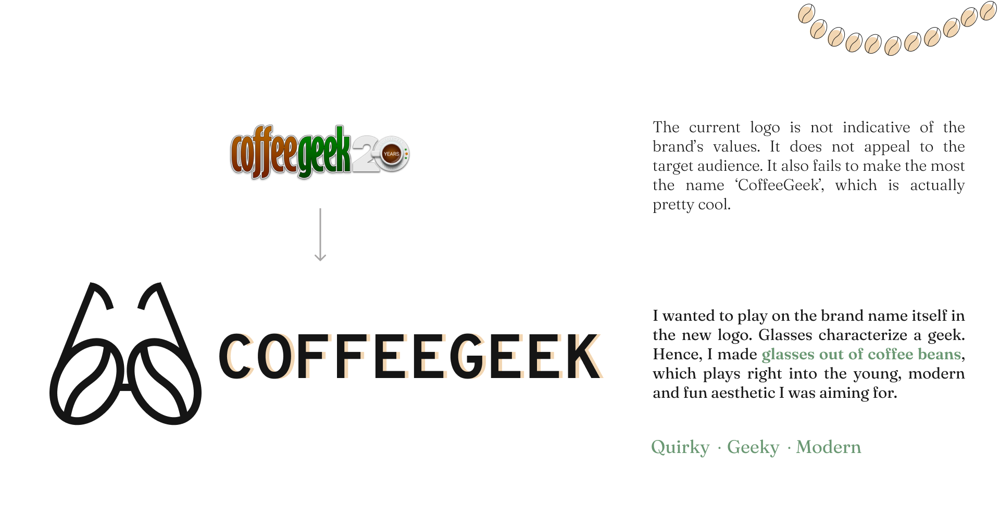
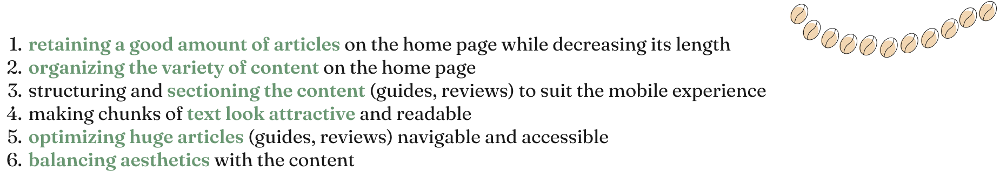
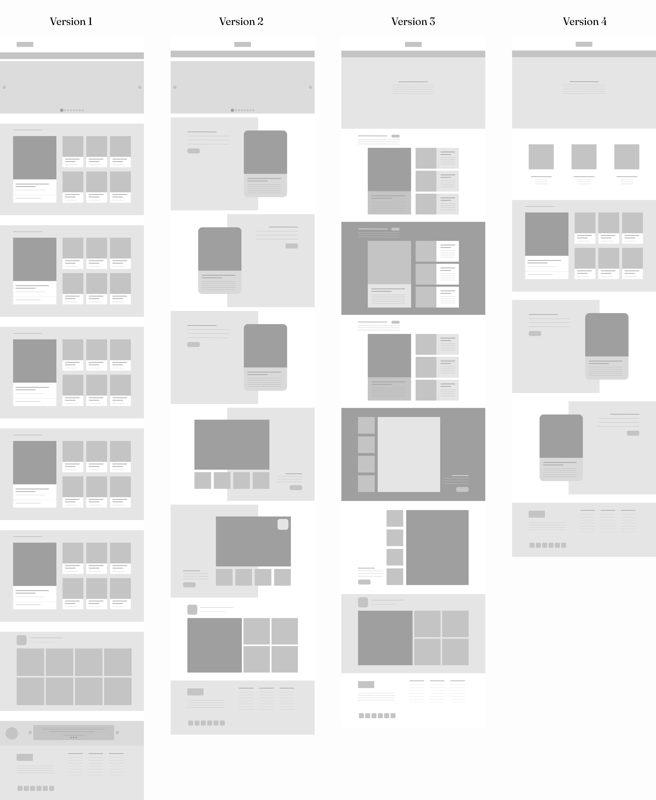
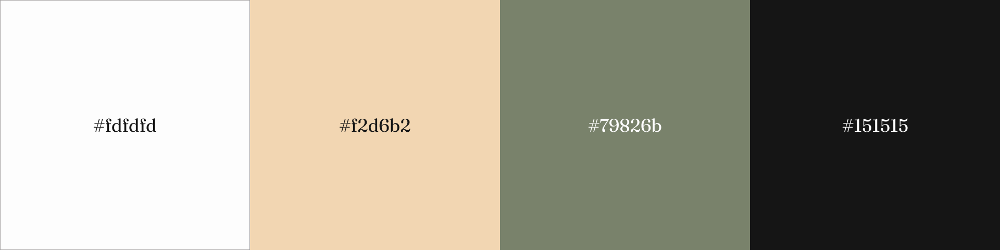

coffeegeek
-


overview
I chose to redesign CoffeeGeek - a blog dedicated to coffee aficionados like myself for all things coffee. I discovered this blog when I first started brewing coffee in Sept 2021. Althought brimming with loads of interesting content, I was unable to consume it, owing to the jarring interface. I was excited to take on the task of redesigning this blog, being a coffee aficionado myself. I redesigned 4 key pages - Home Page, Blog Page, Guide Page, and Review Page for the desktop as well as the mobile version.
client: Graduate Course
when: Feb-Mar 2022
role: Visual & Interaction Designer
process: Strategy, Moodboard, Wireframing, Iteration, High-Fidelity Prototype
tools: Figma
why change?
target audience
The target audience for my redesign is the younger demographic of coffee brewers with varying levels of experience and diverse taste. These users are also at various stages on the coffee brewing journey which is reflected in their brewing equipment, process and preferences. CoffeeGeek’s users are multi-faceted and best described by the words below.

design Strategy
![1. Less is more: From the problems uncovered previously, it feels like the website is trying to do too much at once, visually. I want to take a step back and declutter.
2. Earthy tones: I want to let the brown color of coffee (from the images) shine. Therefore, I want to pair those with earthy greens and neutrals.
3. Whitespace: Because most of the content takes the form of blog posts, it is necessary to structure it in a way that conveys meaning just by looking at it. I plan to use whitespace to build hierarchy and make articles easy to skim through.](../../files/coffeegeek/design strategy.png)
branding and identity

-
design challenges

-
wireframes
As the current home page was misorganized and way too long, I did wireframing to figure out the layout that would suit the website the best.

key design decisions


typography and colorLogo & Body Type: Overpass Mono
Aa
Body Type 1: Graphik
Aa
Body Type 2: Lato
Aa

design system

design highlights


prototype
desktop
mobile
case study


 2022
2022